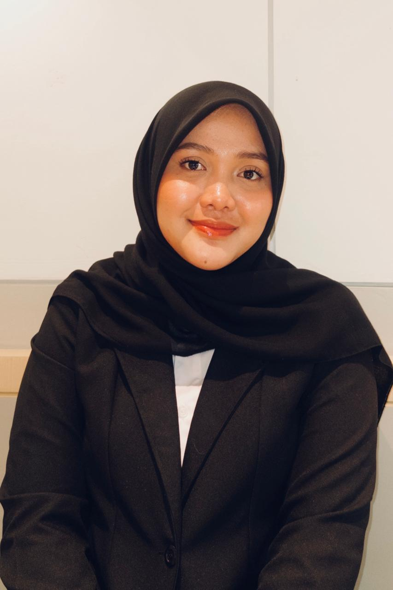

Mahasiswa Ilmu Komputer di Universitas Pertamina dengan fokus membangun software yang menjembatani konsep teknis dan isu keberlanjutan.

Saya mahasiswa Ilmu Komputer di Universitas Pertamina yang tertarik pada irisan antara rekayasa perangkat lunak dan keberlanjutan. Salah satu proyek yang paling saya banggakan adalah kalkulator emisi karbon berbasis struktur data linked list, yang saya kembangkan untuk menghubungkan konsep pemrograman dasar dengan target SDG 11 (Kota dan Permukiman Berkelanjutan) dan SDG 13 (Penanganan Perubahan Iklim).
Saat ini saya mendalami berbagai bidang di kurikulum saya, dari kecerdasan buatan hingga sistem terdistribusi, sambil terus mencari cara agar setiap proyek punya dampak yang bisa dirasakan di luar nilai akademis.
Expert system, algoritma genetika, fuzzy logic, dan representasi pengetahuan.
Clean architecture, prinsip SOLID, dan design pattern dalam Java.
Transport layer, application layer, dan deployment sistem berbasis web.
Diferensiasi & integrasi numerik, pendekatan solusi ODE (Euler, Heun, RK4).
Sinkronisasi thread, mutex, dan pola producer-consumer di C++.
Integral, Deret pangkat, analisis konvergensi, dan penerapan Aljabar Linear pada masalah nyata.
Proyek personal yang menghitung estimasi emisi karbon dari aktivitas sehari-hari menggunakan struktur data linked list untuk menyimpan dan memproses catatan aktivitas secara efisien. Dibangun sebagai eksplorasi bagaimana konsep dasar ilmu komputer bisa diarahkan untuk mendukung isu keberlanjutan kota dan iklim.
Proyek kelompok mata kuliah PBO berupa aplikasi rental kendaraan berbasis Java, disusun dengan clean architecture dan diagram UML, serta menerapkan prinsip SOLID di tiap lapisan sistem.
Proyek kelompok mata kuliah Rekayasa Perangkat Lunak yang membuat dokumen terkait membangun sistem untuk pencarian kerja dekat.